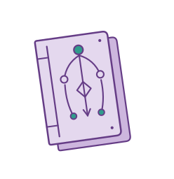

A Magic: The Gathering rules bot that cites the rule it used, and tells you when it doesn't know.
Magic has a 300-page rulebook, and basically nothing anyone actually argues about is a simple lookup. The fights are about how two cards interact, which means knowing which rules apply, applying them in the right order, and being willing to say you don't have the answer. That last part is the one people are worst at. Me included, which is most of why this thing exists.
This page is the measuring half of the project. I ran the finished bot against 1,409 real questions from RulesGuru, a community quiz site where the rulings are written by certified judges, and had a different AI model grade every answer against them. Every number here says which questions it came from, because a percentage with nothing attached to it is just a number I liked.
One of the six sections below is me being wrong. I had a conclusion written down as settled, and a five dollar experiment knocked it over. It's here with the rest, because how it got caught is the better story.
Roughly 86% on all 1,409 questions
Measured over 1,409 questions, the full RulesGuru set, run on the shipped pipeline: claude-opus-5 at low reasoning effort, v2 query rewriting, raw ruling query, three grader votes per answer
Give or take about 2 points from sampling, plus another 4ish because the grader isn't perfectly consistent when you run it twice. The formal version of the sampling part is a 95% confidence interval of 83.96% to 87.60%, which translates to: run this again on a fresh batch of questions this size and you'd land somewhere in that window nearly every time. So the way to say it out loud is mid eighties. Anything with two decimal places on it is me pretending I know more than I do.
The average is also the least interesting number on this page. The spread is the real story: the easy stuff is basically solved, and the hard stuff is where I'd still lose the argument at the table.
| Level | Questions | Correct | Accuracy | 95% range |
|---|---|---|---|---|
| Level 0 | 207 | 199 | 96.1% | 92.6 to 98.0 |
| Level 1 | 565 | 510 | 90.3% | 87.5 to 92.4 |
| Level 2 | 406 | 342 | 84.2% | 80.4 to 87.5 |
| Level 3 | 162 | 110 | 67.9% | 60.4 to 74.6 |
| Corner Case | 69 | 49 | 71.0% | 59.4 to 80.4 |
Corner Case looks better than Level 3, but the two ranges overlap a lot, so I'm not going to pretend one is actually easier than the other.
Source: arm headline_full_votes3
Swap in the wrong rules and card-free accuracy craters, 98.84% down to 15.12%
Measured over 86 questions written to contain no card names at all, run twice: once with the rules the bot actually retrieved, once with rules retrieved for a totally different question
Two bits of jargon are doing all the work here, so: retrieval means the bot searches the rulebook first and pastes the most relevant rules into the prompt before it answers. A placebo arm means I ran those same questions again with the rules swapped out for rules belonging to some other question entirely. Same amount of text, same shape, completely wrong content. It's the cheapest way to find out whether a piece of your system is doing work or just along for the ride.
I had already run that test once and decided the rules were basically dead weight, worth about 3 points. The math was fine. The question set wasn't. 99.4% of the questions name specific cards, and a card's own text usually restates the rule it depends on, so the card was quietly doing the rules' homework the entire time. Build a set with no cards in it at all and the same swap costs 83.7 points instead of 3.
So the fixed claim is smaller and a lot more useful: the rules are redundant when you already have the card text. Not redundant. The experiment that proved me wrong cost about five bucks, which is a great price for not staying wrong in public.
In fairness to past me, the old number wasn't lying about its own questions. When a question names cards, the card text really is carrying the team. Reading the card explains the card.
Source: arms rules86_placebo_votes3 and rules86_real_votes3
With the rules sabotaged it declined 90.7% of the time instead of making things up
Measured over the same 86 card-free questions, scrambled-rules run only
The more interesting half of that collapse is how it fell over. On 78 of the 86 questions it just said it couldn't answer, and told you what was missing. It confidently made something up on 3 of them, which is 3.5%. I read those 3 by hand and one looks like the grader being wrong, so the real number might be 2.
With the correct rules in the prompt it declined zero times out of 86. So it's refusing based on what's actually in front of it, not because a question looked scary. That's the behavior I was after. A bot that says it doesn't have the phasing rules is useful. A bot that invents a phasing ruling and delivers it with total confidence is how you lose a game and a friend.
I can't answer this from the rules provided. The context here contains no phasing rules at all (nothing from rule 702.25 on phasing, and nothing on whether a permanent phasing in counts as entering the battlefield).
Source: arm rules86_placebo_votes3, docs/results-rules86-placebo.md
opus-5 beat gpt-5-mini by about 16 points, and I let the loser pick the referee
Measured over 1,409 questions, both models, identical prompts read from one frozen prompt cache, then graded four separate ways
Model comparisons are really easy to rig without meaning to. If the grader comes from the same family as one of the models being graded, it can quietly favor its own. So I ran the version most likely to make me look wrong: grade both models with gpt-5-mini, same family as the model I expected to lose. It still put opus-5 ahead by 15.8 points.
Then four graders from three different families, all landing within 3.4 points of each other on the size of the gap. And the gap mostly isn't about disagreeing on rulings, it's about bailing. gpt-5-mini declined 157 of the 1,409 questions, roughly 1 in 9, with the rules and the card text sitting right there in the prompt. opus-5 declined 10.
| Grader | opus-5 | gpt-5-mini | Gap | Questions |
|---|---|---|---|---|
| gpt-5-mini (losing family) | ~86% [83.96, 87.60] | 70.05% [67.61, 72.38] | +15.8 | 1,409 |
| Claude panel (winning family) | 87.3% [77.6, 93.2] | 68.1% [56.6, 77.7] | +19.2 | 72 |
| deepseek-v3.2 (neutral) | 87.3% [81.1, 91.7] | 70.0% [62.2, 76.8] | +17.3 | 150 |
| gemini-2.5-flash-lite (neutral) | 75.3% [67.9, 81.5] | 59.3% [51.3, 66.9] | +16.0 | 150 |
The two neutral graders were never checked against a human, so take them as a sanity check on the ranking rather than extra precision. Look at how the absolute scores swing about 12 points between graders while the gap barely budges. That's the whole reason I report a gap instead of a score.
Source: docs/results-crossmodel-fair.md
I graded the grader, and it's likelier to mark good answers wrong than bad answers right
Measured over 90 grader-passed rows sampled across 8 arms for false positives, plus 77 unique rows for false negatives, including a complete sweep of every hard-level pass in three current arms
Every number on this page came out of an AI grading answers against reference rulings, which makes the grader a measuring instrument. An instrument nobody has checked is just vibes with decimal places on them. So I checked it in both directions.
False positives, where it passed an answer that was actually wrong: 4 out of 90, so 4.4%. False negatives, where it failed an answer that was actually right: 0 out of 77. That 77 is a 30-row sample plus a complete sweep of all 53 hard-level passes, and 6 rows show up in both, which is why it's 77 and not 83.
The two error types push the headline in opposite directions and they don't cancel out, so 86% is more likely a little low than a little high. Worst case the band is wide, about 11 points either way. I'd rather have that on the page than act like the grader is a ruler.
Checking it also caught me quoting a number wrong. There was a grader stability figure of 0.48% floating around this project, and it came from a run where almost nothing was close enough to argue about. On a normal run it's more like 2 to 4%, and that's the 4 points of grader wobble in the headline. Same trap as the section above: a real measurement, quoted over the wrong questions.
Source: docs/results-judge-false-negatives.md
The hardest tier sits at 67.9%, and the misses aren't random
Measured over 162 level-3 questions inside the 1,409-question run, plus a qualitative read of 10 failures drawn from a separate 311-row slice
Level 3 is the hardest tier in the set and it's what I'd work on next. 110 of 162. That's a third of the hard questions wrong, and there's no way to phrase it that sounds good.
They do at least cluster, which makes them fixable:
- Layers and timestamps, the rules for what order continuous effects apply in. Biggest bucket by a mile, and if you play Magic you already knew it was going to be layers.
- State-based actions on Sagas and merged permanents, where something loses its abilities partway through.
- Trigger ordering and timing.
- Restriction scope, like treating cannot cast as if it also meant cannot activate.
- Layer stacking after the thing creating the effect has already left the battlefield.
Those buckets come from reading 10 of 23 failures in a smaller slice, so they're leads, not measured rates. The batch they came from is almost entirely layers questions, so I genuinely can't tell you whether layers are hard or that batch was hard. If I had to bet on one root cause, it's multi-hop retrieval: the search finds a rule that points at a second rule, and nothing ever goes back for the second one.
Source: arm headline_full_votes3, docs/results-failure-taxonomy.md
Want to poke at it yourself?
https://rulemancer.jongorecki.com
access code pine-lark-hickory-97
The demo is behind an access code because every question costs me real money. That one up there is a shared code, good for 50 questions total across everybody who uses it, so there is a decent chance it is already used up by the time you get here.
If it is, message me and I will make you your own. Not a growth funnel, just me not wanting to wake up to a drained account.